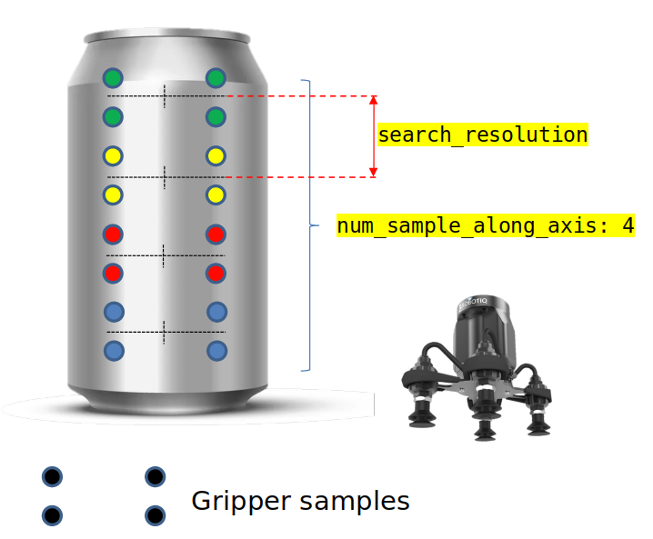
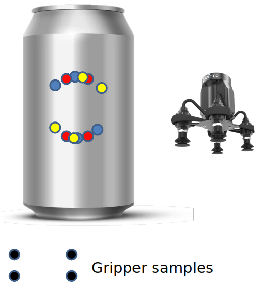

Grasp Planner Suction Parameters (Planning)¶
These parameters directly affect the grasp planning aspects of the suction gripper
grasp_planning_params:
num_sample_along_axis: 3
search_resolution: 0.01
search_angle_resolution: 4
weights:
curvature: 1.0
grasp_distance_to_center: 1.0
number_contact_points: 1.0
Grasp sample Generation¶
These parameter affects the amount of grasp samples generated for each instance of grasp planning
<suction_gripper_name>.grasp_planning_params.num_sample_along_axis¶
num_sample_along_axis: 3
Description |
Total number of samples generated along the axis of the object |
|---|---|
Type |
Int |
Note
The greater the number, the more samples along the axis will be generated and tested, but the grasp planning times will increase
<suction_gripper_name>.grasp_planning_params.search_resolution¶
search_resolution: 0.01
Description |
Provides the distance between each generated sample along the axis of the object |
|---|---|
Type |
Double |
<suction_gripper_name>.grasp_planning_params.search_angle_resolution¶
search_angle_resolution: 4
Description |
Provides the number of rotated grasp samples within an entire rotation about a particular grasp sample |
|---|---|
Type |
Int |
Note
The greater the number, the more rotated samples generated, but the grasp planning times will increase.
Grasp Planning Weights¶
Parameters here directly contribute to the ranking of each suction grasp sample. Configure each of the weight based on the user's particular use case and which attribute is more valued.
Note
Ensure that each weight is a positive value less than or equal to 1.
For default values, users can leave all weights at 1.0
To find out more about how the grasp is being ranked, go to Grasp Planner Methodology (Suction)
<suction_gripper_name>.grasp_planning_params.weights.curvature¶
curvature: 1.0
Description |
Weights for the curvature component of the grasp ranking |
|---|---|
Type |
Double |
<suction_gripper_name>.grasp_planning_params.weights.grasp_distance_to_center¶
grasp_distance_to_center: 1.0
Description |
Weights for the distance to object center component of the grasp ranking |
|---|---|
Type |
Double |
<suction_gripper_name>.grasp_planning_params.weights.number_contact_points¶
number_contact_points: 1.0
Description |
Weights for the number of contact point component of the grasp ranking |
|---|---|
Type |
Double |